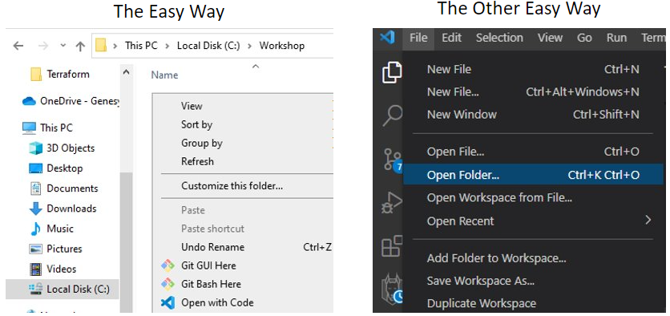
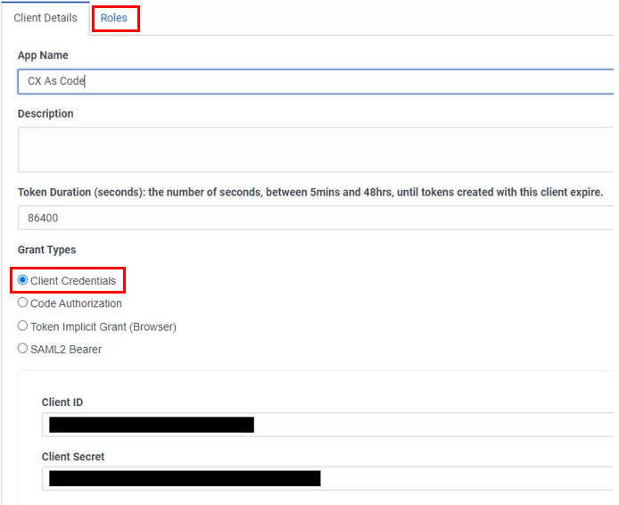
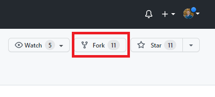
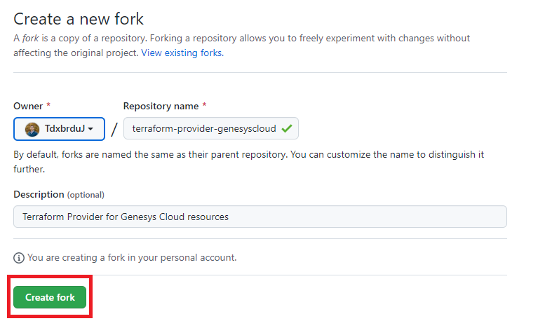
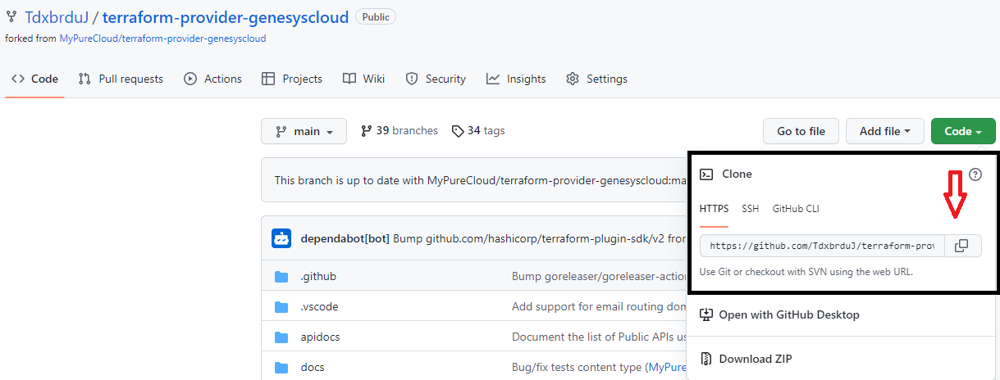
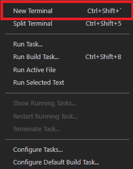
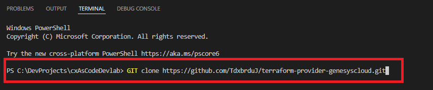

First Things first, we will be creating a local file repository or “repo”. This is fancy talk for creating a folder locally on your machine that will be used to store code and development projects. Storing code on your machine allows you to work on and make changes to your project before pushing your changes to a GitHub repository where the pipeline configuration resides.
It is best practice to not include spaces in the name of this folder, or files in general while developing. Instead consider naming files as: “ThisFile” or “This_File”
You can either right click within this folder and select “Open with code” or navigate to it from VSCode Directly

Generate a client credentials Oauth client in the Genesys Cloud admin panel.
The roles tab is where you specify the permissions this client will have.
it is best practice to limit the permissions of clients to only their required functions

Here, we will walk through how to clone your Terraform repository from the provided GitHub repo here
To start, there are two ways to clone down your repository. The first is to fork the repository and the second is to clone the repository directly. Here, we reccomend forking the repository first, then cloning it down to your machine within VS Code.
You will notice within Github, there a button to fork the repository to your github account on the top right side:

Once you have selected fork, you will be brought to a page where you can select where you would like your repository to reside within GitHub and create your forked repository

Great Job! You’ve now forked the repository. Now its time to clone it to your local machine to start working with the resources provided. Before doing so, ensure you have your file open within GITHub and have properly configured your machine for use with GIThub, terraform, and VScode. Once you’re ready, we start by copying the HTTPS link found under the code button in GitHub as shown below:

Now, we go to VS code where you have opened the file your repo will live within your local machine. Within VS Code, we open a new terminal to run the command “GIT Clone” to pull the repository to your local machine as seen below:

With the terminal now open we will run the following command:

And there you go! You have now successfully cloned down a repository to your local machine to start working on your first terraform scripts. In the next module, we will work through some example terraform scripts getting started with the basics of creating your pipeline of code for configuring your Genesys CX deployments